Introduction
Networking Devices-Hardware devices that are used to connect computers, printers, fax machines and other electronic devices to a network are called network devices.
These devices transfer data in a fast, secure and correct way over same or different networks. Network devices may be inter-network or intra-network.
Some devices are installed on the device, like NIC card or RJ45 connector, whereas some are part of the network, like router, switch, etc.
Before moving on to network devices, let's understand two terms:
1. Collision domain A collision domain is, as the name implies, the part of a network where packet collisions can occur. A collision occurs when two devices send a packet at the same time on the shared network segment. The packets collide and both devices must send the packets again, which reduces network efficiency.
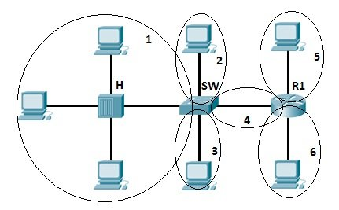
Fig. 1 Illustration of collision domain
2. Broadcast domain
A broadcast domain is the domain in which a broadcast is forwarded.
A broadcast domain contains all devices that can reach each other at the data link layer (OSI layer 2) by using broadcast.
All ports on a hub or a switch are by default in the same broadcast domain.
All ports on a router are in the different broadcast domains and routers don’t forward broadcasts from one broadcast domain to another.
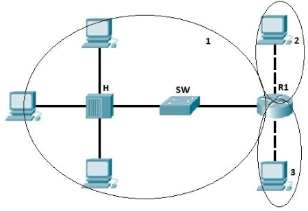
Fig. 2 Illustration of broadcast domain
1. Collision domain A collision domain is, as the name implies, the part of a network where packet collisions can occur. A collision occurs when two devices send a packet at the same time on the shared network segment. The packets collide and both devices must send the packets again, which reduces network efficiency.
Network devices
- Hubs
Hubs connect multiple computer networking devices together. A hub also acts as a repeater in that it amplifies signals that deteriorate after traveling long distances over connecting cables. A hub is the simplest in the family of network connecting devices because it connects LAN components with identical protocols. A hub can be used with both digital and analog data, provided its settings have been configured to prepare for the formatting of the incoming data. Hubs operate at the Physical layer of the Open Systems Interconnection (OSI) model.
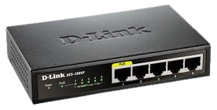 Fig. 3 Hub How Does a Hub Work?
Hubs do not perform packet filtering or addressing functions; they just send data packets to all connected devices. Hub consists of multiple ports. Each port can connect one device. A connected device, say 1, sends the frame (sender). This frame will be delivered to all the connected devices (receivers), say 2,3, and 4 in this case. Although the frame is sent to all ports, a connected device only accepts those frames whose MAC matches the destination MAC address field. The rest of the frames are discarded by that device.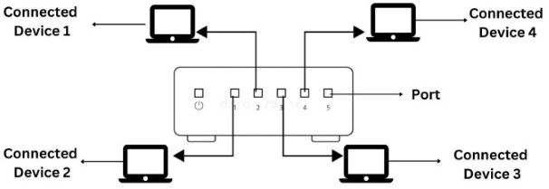 Suppose devices 1 and 2 simultaneously send frames/frames to the hub. Due to this, frames often crash. N number of collision domains are possible in the hub, where N refers to the number of devices connected to the hub. Whenever this collision occurs, the host that has sent the frame will detect it. The sent frames are destroyed, and the host sends a jam signal for other hosts to wait. The waiting period is different for each host to avoid any further collision.Fig. 4 Multiple devices connected to hub Hub falls in three categories:
Initially, hubs were passive devices. However, with development of advanced technology, active hubs and intelligent hubs came into use.
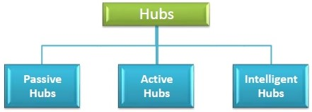 Fig. 5 Types of hub - Passive Hub: They are more like point contact for the wires to build in the physical network. They have nothing to do with modifying the signals.
- Active Hub: They are smarter than the passive hubs. They not only provide the path for the data signals in fact they regenerate, concentrate and strengthen the signals before sending them to their destinations. Active hubs are also termed as ‘repeaters’. The limitation of active hubs is that they magnify noise along with the signals.
- Intelligent Hub: They have a special kind of software in them to perform management functions in the network. The software offers them the capability to find and separate network issues. Thus they have both monitoring and management capabilities.
Advantages of Hub
- Message broadcast: A host in a hub sends messages to every other device in the connecting network.
- Cheaper devices: Among routers, hubs and switches; hubs are the least expensive since they are purely hardware.
- Easy installation: It can be easily installed thus it automatically creates a local area network (LAN).
- Easy removal of damaged device: Due to the different connecting wires, the hub remains perfectly functional even if one of the network segments stops working.
Limitation of Hub
- Hub is everything: Total damage to the hub will cause the entire network to fail, even if all ports are perfectly functional.
- No filtering: Hubs do not allow packet filtering. This means that any data that is being forwarded to one device will also be forwarded to all connected devices.
- No security: Since the hub broadcasts messages to every port, it is not possible to send any private frame. This allows other connected ports to access your data.
- Network Traffic is high: Hubs broadcast the frame/data to every connected device due to which the traffic is high.
- Does not use full duplex transmission mode: Hubs use the half-duplex method for transmission. In the half duplex mode, you can either send a frame or receive a frame at a time. It is not possible to send and receive frames simultaneously.
- Cannot connect to different network architectures: Hubs cannot connect with different network architectures such as token, ring, and ethernet.
-
Bridge
A bridge is used to connect multiple LANs together with a larger Local Area Network (LAN). The mechanism of network aggregation is known as bridging. The bridge is a physical or hardware device but operates at the OSI model’s data link layer and is also known as a layer of two switches. The basic role of bridges in network architecture is storing and forwarding frames between the different segments that the bridge connects. They use hardware Media Access Control (MAC) addresses for transferring frames. By looking at the MAC address of the devices connected to each segment, bridges can forward the data or block it from crossing.
Functions of Bridges in the Network
- The bridge is used to divide LANs into multiple segments.
- To control the traffic in the network.
- It can interconnect two LANs with a similar protocols.
- It can filter the data based on destination/MAC address.
Types of bridge:
- Transparent Bridge: It is also called learning bridges. Bridge construct its table of terminal addresses on its own as it implements connecting two LANs. It facilitates the source location to create its table. It is self-updating.
- Source Route Bridge: It derives its name from the fact that the path which the packet takes through the network is implanted within the packet. It is mainly used in Token ring networks.
- Translational Bridge: The process of conversion takes place via Translational Bridge. It converts the data format of one networking to another. For instance Token ring to Ethernet and vice versa.
How does a bridge work?
A bridge in computer network either blocks or forwards the data depending on the destination MAC address. The address is written into each data frame. Bridge accepts every packet and amplifies them to another side. However, they allow only selected packets to pass through them that are addressed from one node in a network to a node in other networks. It receives all packets from LAN segments. The bridge builds a table of addresses from which it can identify which packets are sent from which LAN to which LAN.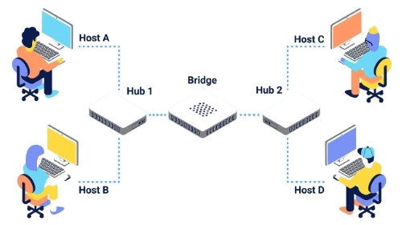 Fig. 6 Bridge Advantages of Bridges
- It can extend a network by acting as a repeater.
- It separates the collision domains.
- Because fewer network nodes share a collision domain, bridges increase the available bandwidth to individual nodes.
- Reduces network congestion by dividing LAN into multiple smaller segments.
Disadvantages of Bridges
- Cannot read specific IP addresses.
- Unable to provide communication network among networks of different protocols.
- Cannot limit the capacity of broadcast messages as they transfer all the messages.
- Unable to handle complicated variable data load.
- Router
A router is a network layer hardware device that transmits data from one LAN to another if both networks support the same set of protocols. So a router is typically connected to at least two LANs and the internet service provider (ISP). It receives its data in the form of packets, which are data frames with their destination address added. Router also strengthens the signals before transmitting them. That is why it is also called repeater.
The router basically performs two major functions:- Forwarding : The router receives the packets from its input ports, checks its header, performs some basic functions like checking checksum, and then looks up to the routing table to find the appropriate output port to dump the packets onto, and forwards the packets onto that output port.
- Routing :
Routing is the process by which the router ascertains what is the best path for the packet to reach the destination.
It maintains a routing table which is made using different algorithms by the router only.
There are 2 types of Routing Tables:
- Static
- Dynamic
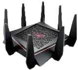 Fig. 7 Router
How does Router work?
A router analyzes a destination IP address of a given packet header and compares it with the routing table to decide the packet's next path. The list of routing tables provides directions to transfer the data to a particular network destination. They have a set of rules that compute the best path to forward the data to the given IP address. Routers use a modem such as a cable, fiber, or DSL modem to allow communication between other devices and the internet. Most of the routers have several ports to connect different devices to the internet at the same time. It uses the routing tables to determine where to send data and from where the traffic is coming.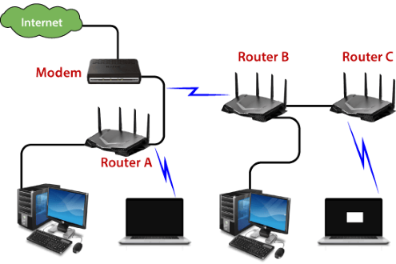 Fig. 8 Illustration of routers connected to different devices
Advantages of Routers
- Determines the most efficient path between source and destination using dynamic routing algorithms such as OSPF, BGP, RIP, etc.
- Reduces network traffic by creating the collision domains and broadcast domains.
- Provides connection among different network architecture.
- Connects multiple users to a single network connection.
Disadvantages of Routers
- Hardware-based routers are vulnerable to cyber attackers since they contain software called firmware. Unpatched routers are quite vulnerable to cyber attacks.
- Since routers analyze data transmission from physical to network layer, they are slower than repeaters and bridges.
- There is less bandwidth for user data since dynamic router communications cause additional network overhead.
- Switch
Switch is a network device that is used to segment the networks into different subnetworks called subnets or LAN segments. Switch connects other devices to Ethernet networks through twisted pair cables. It maintains a list of network addresses of all the devices connected to it. It is responsible for filtering and forwarding the packets between LAN segments based on MAC address. On receiving a packet, it checks the destination address and transmits the packet to the correct port.Functions of Switch
- It operates in Data Link Layer in OSI Model.
- Before forwarding, the packets are checked for network errors.
- It transfers the data only to the device that has been addressed.
- The data is transmitted in full duplex mode.
- It allocates each LAN segment a limited bandwidth.
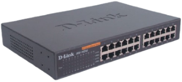 Fig. 9 Switch
Switching techniques are used to decide best route for data transmission between source and destination. These are classified in three categories :
- Circuit Switching
- Message Switching
- Packet Switching
Advantages
- Prevents traffic overloading in a network by segmenting the network into smaller subnets.
- Increases the bandwidth of the network.
- Less frame collision as switch creates the collision domain for each connection.
Disadvantages
- It can not stop traffic destined for a different LAN segment from travelling to all other LAN segments.
-
Modem
Modem is a device that enables a computer to send or receive data over telephone or cable lines. The main function of the modem is to convert digital signal into analog and vice versa. Modem is a combination of two devices − modulator and demodulator. The modulator converts digital data into analog data when the data is being sent by the computer. The demodulator converts analog data signals into digital data when it is being received by the computer.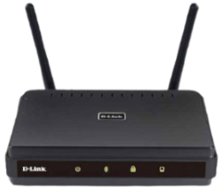 Fig. 10 Modem
How does modem work?
The modem is placed between the telephone line and the computer system or router. It connects the devices with the ethernet port given in it. It connects the ISP(internet service provider) to the home network directly for the single PC. Or it is connected with the router to connect with multiple devices. The below diagram is converting the incoming analog signal coming from telephone-lines/optical fiber to a digital signal and sending it to the PC. Without a modem, we cannot connect to the internet.
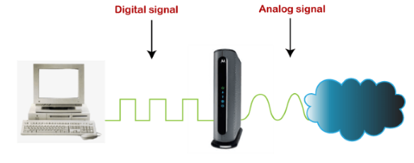 Fig. 11 Modulation Types of Modems:-
- Cable Modem - The cable modem is known as the broadband device as it allows the computer to communicate with ISP over a landline connection. It is connected with the landline connection using the coaxial cable and with the computer using the ethernet.
- DSL Modem - DSL stands for Digital Subscriber line that allows the transmission of data over the normal telephone line. It can be used to connect to a computer or router to provide the internet connection through the ethernet port or USB port.
- 2-wire Modem - It use the same pair of wires for outgoing and incoming carriers.
- 4-wire Modem - In a 4-wire connection, one pair of wires is used for the outgoing carrier and the other pair is used for incoming carrier.
- Half duplex − A half-duplex modem has the capacity to transfer data in both the directions but only one at a time.
- Full duplex − A full duplex modem can transmit data in both the directions simultaneously.
-
RJ45 connector
RJ45 is the acronym for Registered Jack 45. RJ45 connector is an 8-pin jack used by devices to physically connect to Ethernet based local area networks (LANs). Ethernet is a technology that defines protocols for establishing a LAN. The cable used for Ethernet LANs are twisted pair ones and have RJ45 connector pins at both ends. These pins go into the corresponding socket on devices and connect the device to the network.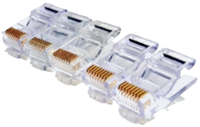 Fig. 12 RJ45 -
Ethernet Card
Ethernet card, also known as network interface card (NIC), is a hardware component used by computers to connect to Ethernet LAN and communicate with other devices on the LAN. The earliest Ethernet cards were external to the system and needed to be installed manually. In modern computer systems, it is an internal hardware component. The NIC has RJ45 socket where the network cable is physically plugged in. Modern cards support fast Ethernets up to a speed of 100 Mbps. Some cards even have capacity of 1 Gbps.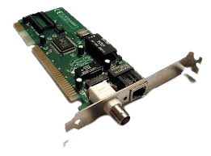 Fig. 13 Ethernet Card - Gateway
Gateway is a network device used to connect two or more dissimilar networks. In networking parlance, networks that use different protocols are dissimilar networks. A gateway usually is a computer with multiple NICs connected to different networks. Gateways provide translation between networking technologies such as Open System Interconnection (OSI) and Transmission Control Protocol/Internet Protocol (TCP/IP). Because of this, gateways connect two or more autonomous networks, each with its own routing algorithms, protocols, topology, domain name service, and network administration procedures and policies. Gateway uses packet switching technique to transmit data from one network to another. In this way it is similar to a router, the only difference being a router can transmit data only over networks that use the same protocols.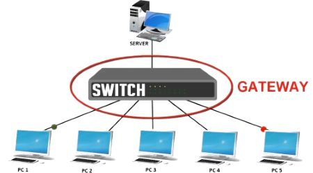 Fig. 14 Gateway -
Wifi Card
Wi-Fi is the acronym for wireless fidelity. Wi-Fi technology is used to achieve wireless connection to any network. Wi-Fi card is a card used to connect any device to the local network wirelessly. T he physical area of the network which provides internet access through Wi-Fi is called Wi-Fi hotspot. Hotspots can be set up at home, office or any public space. Hotspots themselves are connected to the network through wires. A Wi-Fi card is used to add capabilities like teleconferencing, downloading digital camera images, video chat, etc. to old devices. Modern devices come with their in-built wireless network adapter.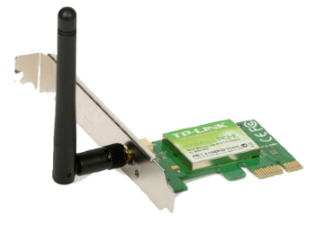 Fig. 15 Wifi Card -
Repeater
A repeater is an electronic device that amplifies the signal it receives.When the incoming signals are attenuated, it copies them bit by bit and retransmits them at their original strength. You can think of a repeater as a device which receives a signal and retransmits it at a higher level or higher power so that the signal can cover longer distances, more than 100 meters for standard LAN cables. Repeaters work on the Physical layer and it is a two-port devices.
Let's understand about repeaters with an example: Assume that one person communicates with the other using a one-to-one communication device such as a walkie-talkie. If there is a clear path between the two points, the data can be transmitted successfully. If there is a hill or mountain in the way, the data cannot be delivered flawlessly. As a result, an antenna is placed between the two devices to avoid this situation, as shown in fig. 16
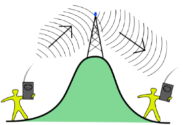 Fig. 16 Example of repeater
There are different types of repeaters:-
- On basis of the types of signals generated
- Digital repeaters : Data is transmitted in the form of binary digits such as 0s and 1s. While transmitting data, 0 and 1 values are generated, and it can transmit data over long distances. This repeater is capable of retiming and resynchronizing.
- Analog Repeaters : Data is transmitted in the form of analog signals to increase the amplitude of the data. These repeaters are used in trunk lines to help broadcast multiple signals using frequency division multiplexing (FDM).
- On basis of types of network-connected
- Wired Repeaters : They are used in wired LANs. For example OCRs
- Optical communications Repeater (OCR) : These are devices that extend the range of signals carried by a fiber optic cable. Digital signals are transmitted as a short pulse of light through a fiber optic cable in this repeater. Photons are tiny particles of light that can be absorbed or scattered in the fiber. On the other hand, optical amplifiers are designed for repeaters to amplify light without first converting it to an electric signal.
- Wireless Repeaters : They are used in wireless LANs and cellular networks. For example telephone repeaters, and radio repeaters.
- Telephone Repeater : Long-distance communications are carried out over telephone networks. To increase the power, a transistor-based amplifier is maintained. This telephone network is a bidirectional communication system in which audio signals transmit data. These telephone services are primarily used in submarine communications.
- Radio Repeater : It is used to extend the range of radio signal coverage. A radio repeater is a device that consists of a radio transmitter and a radio receiver. The received signals are amplified and retransmitted frequently at different frequencies to provide coverage beyond the obstruction.
- On basis of the domain of LANs connected
- Local Repeaters : They connect LAN segments separated by small distances.
- Remote Repeaters : They connect LANs that are far from each other.
Advantages of repeater:
- The Repeater supports the signal strength.
- These Repeaters are both cheap and easy to use.
- The Repeaters have no impact on the network's performance.
- These Repeaters are capable of retransmitting data and boosting weak signals.
Disadvantages of repeater:
- The number of collisions increases as the number of repeaters increases.
- Only a limited number of repeaters can be connected to it.
- We can't connect the different network architectures in repeaters.
- The data traffic in the Repeaters cannot be reduced.
- On basis of the types of signals generated
-
Network Interface Card (NIC)
NIC allows a networking device to communicate with the other networking device. NIC converts the data packets between two different data transmission technologies. A PC uses parallel data transmission technology to transmit the data between its internal parts while the media that provides connectivity between different PCs uses serial data transmission technology.Types of NIC:-
- Internal NIC - For an internal network interface card, the motherboard has a slot for the network card where it can be inserted.
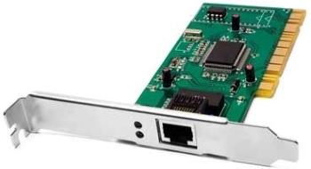 Fig. 17 Internal NIC
- External NIC - The motherboard does not have a slot where NIC can be inserted.
Hence, these network interface cards use an antenna to offer wireless reception via radio frequency waves.
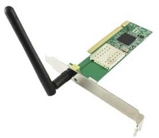 Fig. 18 External NIC
How does a NIC card work?
Operating as an interface, a NIC card can transmit signals at the physical layer and deliver data packets at the network layer. Irrespective of location, the NIC card acts as a middleman between a computer, or server, and a data network. When a user requests a web page, the LAN card gets data from the user device, sends it to the server via the Internet, and gets the required data back from the Internet to display for users.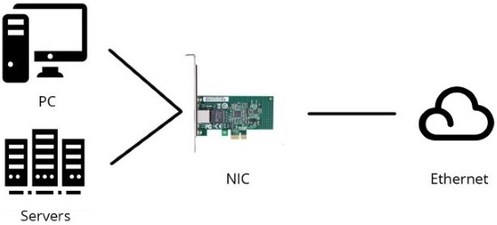 Fig. 19 Example of NIC
Advantages of NIC
- As compared to the wireless network card, NIC provides a secure, faster, and more reliable connection.
- NIC allows us to share bulk data among many users.
- It helps us to connect peripheral devices using many ports of NIC.
- Communication speed is high.
- Network Interface cards are not expensive.
Disadvantages of NIC
- NIC is inconvenient as compared to the wireless card.
- For wired NIC, a hard-wired connection is required.
- NIC needs a proper configuration to work efficiently.
- NIC cards are not secure, so the data inside NIC is not safe.
- Internal NIC - For an internal network interface card, the motherboard has a slot for the network card where it can be inserted.
-
MAU and Patch Panel
MAU and Patch Panel look like the Hub, but they are different. MAU (Multi Access Unit) is the sibling of Hub for the token ring network. Differences between Hub and MAU are the following: -- Hub is used for the Ethernet Network while the MAU is used for the Token ring network.
- Hub creates logically star topology while MAU creates logically ring topology.

Fig. 20 Multi Access Unit
-
Proxy
Proxy is used to hide the internal network from the external world. It can be a dedicated device or can be an application software. Once it is configured, all communication goes through it. Since external devices cannot access the internal devices directly, they cannot tamper with the internal devices.
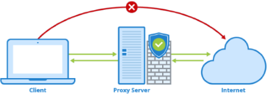 Fig. 21 Proxy
-
Transceiver
Transceiver is a small device that has the capability of receiving and sending both types of signals; analog and digital. Usually, it is inbuilt in network interface card. But, it is also available as an individual device. It detects the type of signal from the network wire and converts the passing signal accordingly. For example, a transceiver is attached with a device that transmits signal in digital form. Now suppose, this device is connected with the network wire that uses analog form for data transmission. In this case, the transceiver converts digital signals in the analog signals before placing them in the network wire.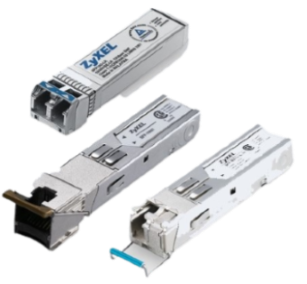 Fig. 22 Transceiver
-
Firewall
In computing, a firewall is a network security system that monitors and controls incoming and outgoing network traffic based on predetermined security rules. A firewall typically establishes a barrier between a trusted internal network and untrusted external network, such as the Internet. Firewalls are often categorized as either network firewalls or host-based firewalls. Network firewalls filter traffic between two or more networks and run on network hardware. Host-based firewalls run on host computers and control network traffic in and out of those machines.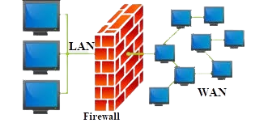 Fig. 23 Firewall